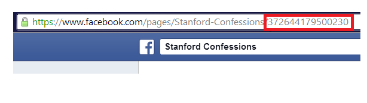
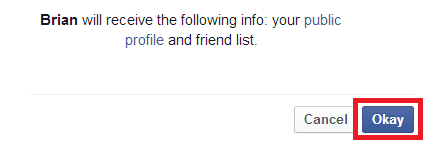

1. Enter a Facebook page or profile ID into the 'Facebook ID' field. (Hint: The Facebook ID is the number appearing at the end of the page's URL.)
2. Hit 'Get Posts.'
3. If Facebook requests permissions, click 'Okay.'
4. Wait for results to load. If loading takes longer than about 10 seconds, ensure your Facebook ID is correct.
5. Enjoy your sorted Facebook goodness!